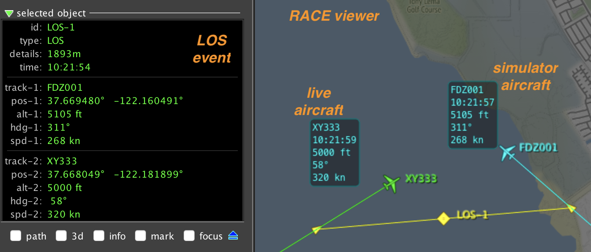
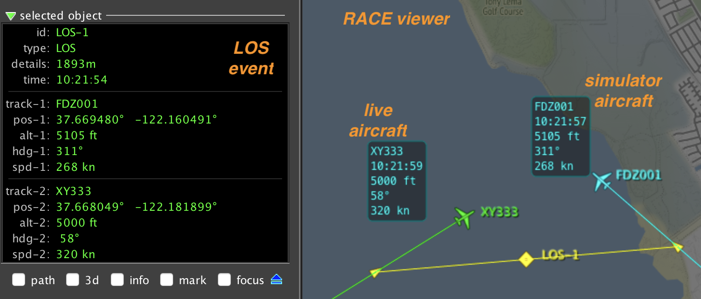

What is RACE?
- started as a distributed LVC simulation framework in 2015

-
evolved into a general event driven application framework:
- can import/export from/to external systems - connectivity
- can process high event rate and data volume - scalability
- supports distributed and massively concurrent operation
- has batteries included (except Java runtime, SBT build system)


 
